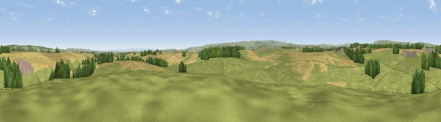

Viewpoint near Stainton
#16527 in England · top 38% of its area beats it · near StaintonThe view, rendered

A 360° render of this exact spot computed from the terrain model, tree cover and land cover — summer colours, afternoon light, calibrated against photographs of famous viewpoints. Real trees, hedges and buildings will differ in detail.
The panorama
Grey silhouette: terrain skyline in each direction (720 bearings, Earth curvature and refraction included). Dashed green: skyline with trees (+15 m) and buildings (+8 m) as obstacles. Blue strip: how far the ground is visible on each bearing.
Where the view opens
Wedge length = distance to the farthest visible ground on that bearing (vegetation-aware). Rings at 10, 25 and 50 km.
What fills the view
63% grassland · 27% cropland · 8% woodland · 2% built-up
Angular shares of the visible panorama (visual magnitude), not map area. Landscape diversity 0.40 (0–1 Shannon).
Key numbers
More beautiful places nearby
The staircase of upgrades: each row has a higher view potential than everything closer. Driving times are estimates from straight-line distance, calibrated against real road routing — check an actual route before setting out.
| Place | Direction | Drive | Score |
|---|---|---|---|
| Viewpoint near Whorlton | ESE · 2 km | ~6 min | 64.1 |
| Viewpoint near Eggleston | NW · 9 km | ~18 min | 69.7 |
| Viewpoint near Eggleston | NW · 10 km | ~20 min | 76.0 |
| Viewpoint near East Witton | S · 33 km | ~51 min | 77.8 |
| Viewpoint near Ingleby Cross | ESE · 41 km | ~60 min | 78.8 |
| Viewpoint near Ingleby Cross | ESE · 41 km | ~60 min | 82.4 |
| Beacon Hill | ESE · 41 km | ~60 min | 84.7 |
| Carlton Bank | ESE · 45 km | ~65 min | 85.1 |
54.55558, -1.85424 · source: screening · position refined by local search. Computed location — check access rights before visiting.